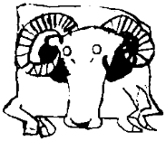

Gül Hanım’a gülümseyerek, günaydın dedi. Büyük patronun içerde olduğunu öğrendi. Normalde her zaman içeriye haber veren Gül, bu ikisi son günlerde bir şeyler karıştırdığı için, bunu yapmadı. Tankut temiz, ışıl ışıl bir yüzle, gülerek içeri girdi. Kalın, ses geçirmez kapıları kapattı. Argun Bey çoktan gelmiş, bu dünyadaki son kallavi kahvesini içiyordu. Tankut’u gayet güler yüzlü karşıladı:
“Gel evlat gel, bak kitaplarda neler buldum!”
Tepeden tırnağa araştırmacı kimliğine bürünmüştü. Masasının üstü tepeleme kitap yığılıydı. Ofisin her köşesi doldurulup fırlatılmış kartlarla doluydu. Argun Bey büyük bir saflıkla,
“Yavrum şu notları bir toparlayıver!” komutunu verdi. Tankut, eğilip kalkıp kartları toplarken, “Birazdan görürsün daha neleri toparlayacağımı” dedi içinden.
Beklediği gibi, Rüstem’in tabancası içindeki tek kurşunla hâlâ sehpanın üstündeydi. Küçük, kara, gebe bir canavar gibi, uysal uysal dün bırakıldığı yerde yatıyordu. Rüstem’in kendi başına Argun’dan tabanca mabanca isteyecek hali yoktu ya? Belki de yiğit koruma, bu racon adamı, tabancanın burada olduğunu bile bilmiyordu. Derin bir nefes alarak tabancayı sehpadan aldı. Tam o sırada bir yerlerden gelen kendi sesini duydu. Aralarında aynen şöyle bir konuşma geçti:
“Tankut, hey, Tankut oğlum, buraya bak. Beni duy, ben Tankut! Yarından geliyorum. Argun’u öldürme! Tavramina seni kızdırmak istemiş! Oyun oynamış!”
“Dede, bi siktir git, işim var şimdi. Oyunu sonra beraber yapacaz seninle!”
Zerre kadar umursamadı Albız’ı. İdeolojik temelli bir töre cinayetinde buruş kırış, çatlak kabuklu bir kuyruksuz iblisi kim dinler allasen? O filmlerden ve yerli dizilerden pek özendiği tarzda, ceketinin altına, arkaya kemerinin içine, beline sokuşturdu aleti. Kartları toparlayıp Argun’un masasına yürüdü. Argun “yav bu çocuktaki silah aşkı, kültürü de pek ilginç, şu silahı yerleştirişteki havaya bak” diye düşündü.
Sonra, Tankut’a son dersini verdiğini bilmeden, önce sakin, sonra gittikçe heyecanlanarak, kısa günün bulgularını özetledi. Masasının ilk çekmecesindeki ses kayıt cihazı her zamanki gibi bu hikmetli konuşmaları kaydediyordu. Tankut, sevgili abisinin bu küçük sırrını bilmezdi. Bilse belki abisinin o dehşetli keskin hafızasını açıklayabilir, ama hadise de tüm mistikliğini yitirirdi. Küçük bir meslek sırrı!
Argun Afaki, yüzünde geniş bir gülümsemeyle başladı. Önce elindeki kitapları tanıttı. Denis Sinor’un derlediği Erken İç Asya Tarihi, Peter Golden’in nice emek dökerek yazdığı Türk Halkları Tarihine Giriş’i, bizden Şaban Kuzgun’un Türklerde Yahûdilik ve Doğu Avrupa Yahûdilerinin Menşei Meselesi: Hazar ve Karay Türkleri adlı monografisi, M. Artamanov’un The History of the Chazars adlı çalışması, popüler bir yapıt olarak Arthur Koestler’in Onüçüncü Kabile’si, A. Zajaczkowsky’nin Karaim kültürü ve dili üzerine bir hazine olan Karaims in Poland'ı, artık bulunması iyice zorlaşan ve geçenlerde 125 dolar vererek internet üzerinden aldığı, D. Dunlop’un The Jewish Khazars adlı anıtsal eseri ve Selçuklu tarihinde gerçekten aşılması güç bir köşe taşı olan Osman Turan’ın tüm eserleri, bu meyanda onun anıt eseri sayılan Selçuklular Tarihi ve Türk–İslâm Medeniyeti adlı kitabı, Talat Tekin’in Orhon Türkçesi Grameri, O. F. Sertkaya’nın Göktürk Tarihinin Meseleleri, Η. N. Orkun’un Eski Türk Yazıtları, Semih Tezcan ile Hendrik Boeschoten’in Dede Korkut Oğuznameleri... Bunları ve daha nicelerini, sabırlı bir öğretmen gibi Tankut’a kısa birkaç kelimeyle tek tek tanıttı. Daha da tanıtacaktı. Tankut, Argun için kullandığı son “abi” sözcüklerinden birini kullandığının gayet bilincinde olarak,
“Abi, ne diyor bu kitaplarda? Sen nasıl olsa bakıp özetlemişsindir. Mesela, bu Hazarlar hakikaten Yahudi miymiş? Benim aklım pek yatmadı da Türk evladının Yahudi olacağına...” dedi.
Argun gülümseyerek Hazarların yönetici sınıfının ve halkın bir kısmının VIII. yüzyılda Yahudiliği kabul ettiklerini söyledi:
“Yönetici sınıf Yahudi olduğuna göre devlet de Yahudi’dir, Yahudilik resmi dinleri olmuştur ama diğerlerine, bu arada, animist veya Şamanist olanlara bile hoşgörüyle bakıyorlarmış. Tartışmalı olan nokta, Yahudiliğin yalnızca ilk beş kitabını içeren Tora’yı öne çıkaran Karailik mezhebini mi yoksa Talmud ve Mişna’yı da dikkate alan Rabbaniliği mi kabul ettikleri.”
Tankut, enikonu sarsılmıştı. Yine de çelik sinirlerine hâkim oldu. Entelektüel yanı ağır bastı. Evet, dünyada kaç kişi, bir cinayetten yalnızca üç dakika önce şu soruyu sorardı?
“Peki Selçuklular gerçekten Hazarlara bağlı mıymışlar?”
“Haa, orası tartışılıyor. Yabancı tarihçiler bunu ciddi bir olasılık olarak görüyorlar, ama bizimkiler pek oralarda değiller. Yalnız, bak, Turan, sayfa 59-61’de ne diyor: ‘Filhakika kaynakların kaydettiği Oğuzların Hazarlara tâbiiyetini reddetmek mümkün değildir... bu eski devirde Selçukluların dahil bulunduğu Oğuzların, Yabgu vasıtası ile ve zayıf bir feodal bağla, Hazarlara tâbi bulunduklarını kabûlde bir zorluk kalmaz...’ Böyle diyor ve Selçuk’un oğullarının Tevrat isimleri taşıdığını da ekliyor ama...”
“Eee, aması ne?”
“Selçukluların Yahudi dininde olmadıklarını söylüyor...”
“!!”
“Evet, aynen şöyle diyor: ‘Esastan âri bu faraziyeler yanında, diğer göçebe Oğuzlar gibi, Selçukluların da İslamiyet’i kabûlden önce Ramlık (şâmân) dininde yaşadıkları o kadar açıkça bellidir ki, İslâm devrinde de rastlanan bu isimlere, olsa olsa, Hazarlar ile ticâri ve kültürel münasebetlerin, bir tesiri gözü ile bakmaktan ve Türklerin ad koyma an’aneleri icâbı saymaktan başka bir mânâ verilemez’.”
Argun durdu, Tankut’tan, beklediği tepkiyi alamayınca devam etti:
“İyi mi? Tankut, evladım, bir adamın bütün oğulları Yahudi adı taşır da, olay yalnızca ticari ve kültürel ilişki düzeyinde mi kalır? Ne oldu biraz önce söylediği tabiiyet meselesine? Kültürel ve politik ilişki var da dini ilişki yok mu? Şart mı Türklerin Şamanlıktan Müslümanlığa doğrudan geçmeleri? Ayrıca bu isimler aynı zamanda İslam ismidir diyerek konuyu dağıtıp, bulandırıyor... Gerçi İsrail biraz tuhaf ama, de ki hepsi İslam isimleri, doğrudur, peki neden söylemez bu ‘İslam isimlerini’ bunların Müslüman olmadan önce aldığını? Ancak Şamanistler mi iyi Müslüman olur? Yahudilik gibi başka bir semavi dinden gelen adamın içten bir Müslüman olamayacağından mı korkuluyor ki işin bu tarafı yuvarlanıp geçiştiriliyor? Başka bir deyişle, bir defa Yahudi olan hep Yahudi mi kalıyor?”
“Abi, daha önceki Unomastik çalışmalarımız ışığında düşününce bu son söylediğin bana makul geliyor. Evet, neden bu olmalı!”
Zihni, tavşan görmüş bir tazı hızında yeni tezlere koşan Argun Afaki Bey, sevgili damadının bu demode yorumuna takılmadı bile. “Gençtir, öğrenir” diye düşündü. Devam etti:
“Bak, sonra, Kuzgun da 58. ve 59. sayfalarda aynen şunları söylüyor: ‘Tarihte ilk Türk Devleti kurulduğu zamandan itibaren bir Türk Devleti yıkılınca yerine hemen bir yenisi kurulmaktadır. Yıkılmakta olan devlet, yıkılırken, yeni devletin zeminini hazırlamakta, adeta yıkılan devlet, yeni kurulacak devlete analık yapmaktadır... Hazar Devleti de yıkılırken, Selçuklu Devleti’nin kuruluşuna zemin hazırlamıştır... Selçuklular, askeri, idari, iktisadi alanlardaki bütün müesseseleri, Hazarlardan almışlardır’. Dikkat isterim Tankut, aldıkları mirasta bir tek din yok! Tankut, dün öğrendiklerimizi düşün! Maden bulduk evladım, maden! Sabetay Zevi artık dünkü çocuk kalır! Boş ver o hülyalara dalmış kalmış adamları... Biz bu işin sırrını temelinden çözdük! Yok zannettiğimiz, olunca başkası zannettiğimiz, dönme zannettiğimiz Beyaz Türkler varmış meğer! Gizli Hazar-Selçuk-Osmanlı tarihini keşfettik. Düşünsene, ne kadar Encyclopaedia Unomastica cildi varsa yeniden yazılacak, bütün Secdata verileri yenilenecek, yaşadık! Markete büyük bir canlılık gelecek. Şu Sarkel’in bugünkü yerini bir araştır bakalım. Turlar düzenleriz. Valla yaşadık!”
Unomastik Holding’in tek sahibi ve yönetim kurulu başkanı Argun Afaki Bey’in şu kahpe dünyamızdan ayrılırken söylediği sözlerin “yaşadık” olması, olaya ayrı bir ironi katmıştı. Zavallıcık, sağ şakağından giren tek bir kurşunla vurulmuş, önündeki kitaplara doğru eğik duran başı önce sola doğru bir hamle yapmış, omuzlarının direnmesi yüzünden geri dönmüş, sessizce öne düşmüş, masasının kenarına alnını dayayarak durmuştu. Elinde tuttuğu küçük boyutlu kitap ters dönmüş bir halde düşmüş, iki ayağının arasında yatıyor, eskimiş kapağındaki atlı resminin üzerine kan damlaları düşüyordu.
Tankut boş tabancayı ortalıkta bırakmayı mertlikten saymadı. Rüstem gibi has delikanlının başının belaya girmesini istemiyordu. Elini Argun’un gömlek cebine soktu. Birden sırtı buz kesti. Allah’ın cezası kasa anahtarları orada değildi! “Dur, dur bakalım hemen cızırdama! Yutacak değil ya buralarda bir yerdedir...” diye kendini sakinleştirerek anahtar aramaya çıktı. İlk baktığı yer ses kayıt aletinin bulunduğu çekmece oldu. Şaşırdı. Kaseti sökerek cebine attı. İyi ki anahtarı aramak durumunda kalmıştı. Yoksa saniyesi saniyesine kaydedilen bir cinayet olacaktı bu. Peki ama anahtar neredeydi?
Tüm çekmeceleri karıştırdıktan sonra, son bir umutla kasanın olduğu dolaba gitti. Evet, anahtarlar kasanın hemen önünde duruyordu. Alışık hareketlerle kasayı açtı. Hayal Taşı’nı aldı. Montunun sol iç cebine koydu. Elleri kasanın içindeki para demetlerine çarpınca, hiç niyeti olmamasına karşın, ihtiyacı olacağını düşünerek, büyük, körüklü deri çantasını gıcır gıcır dolar ve euro desteleriyle ağzına kadar doldurdu. Merakla kasanın içine baktı. Daha yarısını bile boşaltamamıştı. Allah Allah! Holdingin bütün mali işlerini bildiğini düşünürken bu paralar da neyin nesi? Kendisinden habersiz ne yapıyor da bu parayı kazanıyor Argun? Düşünecek, kafa yoracak vakit değildi. Argun’un çantasını da kaptı. İçindeki kitap ve diğer ıvır zıvırı dikkatli bir şekilde çıkararak masanın üstüne koydu. Beğenen gözlerle Argun’un cep telefonuna baktı. Onu da cebine indirdi. İkinci çantayı da parayla doldurdu. Geride kalanların üzerine kasayı kilitledi. Anahtarları kasanın önüne koydu.
Şimdi, çok değil birkaç saatlik bir vakit kazanması gerekiyordu. Kendi kendine birkaç Argun sesi çıkarma denemesi yaptıktan sonra Argun’un telefonunun bir düğmesine basarak konuştu “Kızım çalışıyorum, yemek istemiyorum, kimse rahatsız etmesin!” Sonra dışarı çıktı. Gül Hanım,
“Ay çok şeker Argun Bey taklidi yapıyorsunuz! O da güldü mü bari?” dedi.
Tankut, geniş bir gülümsemeyi yüzüne yaydı, aynı taklit sesle,
“Hoo... hoo... gülmekten öldüm valla, masamın üstünde yatıyorum...” dedi. Kendi sesiyle ekledi:
“Patronun önünde dağlar gibi kitaplar yığılmış durumda. Akşama kadar çalışmak istiyormuş.”
“Ha... ha... çok şekersiniz... Biliyorum, kitapları sabah bana getirtti!”